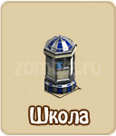

Получено: файл; исходный URL. Первая иллюстрация строки каталога; авторство не подтверждено. Идентичность изображения при замене домена не проверена. Страница: источник.
Школа
браузерная версия; платформа и дата редакции не установлены- Тип
- Постройка
- Версия и дата
- браузерная версия; платформа и дата редакции не установлены
Данные по источнику · браузерная версия; платформа не установлена · дата редакции списка не установлена
Предварительно: Прочитан список. Имена файлов пиктограмм приводятся как есть: они не гарантируют идентификацию материала. Alt-атрибуты источника содержат ошибки. Отдельная статья и дата не проверены.. Требуется сверка.
- Сведения из списка, включая имена файлов пиктограмм
- [рисунок: Shkola.png] Доступна после прохождения квеста "Школа" Стоимость: 50 000 монет Даёт опыта: 610 Стадии строительства: 1. 25 [рисунок: Bloki.png] + 30 [рисунок: Belaya_kraska.png] + 50 [рисунок: Shesternya.png] 2. 50 [рисунок: Metall.png] + 20 [рисунок: truba.png] + 15 [рисунок: bolt.png] 3. 15 [рисунок: List_zolota.png] + 15 [рисунок: Gayka.png] + 15 [рисунок: fanera.png] Производит: 1. 01 [рисунок: Knigi.jpg] = 05 [рисунок: gazeti.png] + 05 [рисунок: Shesternya.png] 2. 01 [рисунок: Mel.jpg] = 10 [рисунок: Cement.png] + 02 [рисунок: Super-kley.png]


Данные по источнику · браузерная Зомби Ферма / Зомби Мания, платформа не уточнена · дата URL — дата публикации, редакция могла обновляться позже
Предварительно: Прочитана отдельная статья. Иллюстрации и ссылки ведут к ЗомбиСити; независимость не доказана. Исторические параметры требуют сверки редакции.. Требуется сверка.
- Доступ и цена
- с 1 уровня; 50 000 монет покупка, 5000 продажа; требуется открыть квест «Школа»
- Стадия 1
- 25 блоков + 30 белой краски + 50 шестерён; 100 опыта
- Стадия 2
- 15 болтов + 50 металла + 20 труб; 200 опыта
- Стадия 3
- 15 листов золота + 15 гаек + 15 фанеры; 300 опыта
- Производство
- 1 книга: 5 газет + 5 шестерён; 1 мел: 10 цемента + 2 супер-клея. Также снежные буквы русского алфавита.
- Копание
- байкерская, автомобильная и коллекция знаков; металлолом, бесплатные лопаты, опыт и монеты.
Данные по источнику · историческая браузерная игра, площадка не указана · 05.05.2012 — дата публикации; дата редакции неизвестна
Предварительно: Сопоставлено по единственному точному названию; различные версии или одноимённые объекты могут различаться. Названия файлов и alt пиктограмм сохранены как подписи, не заменяют проверенную расшифровку; изображения и цены требуют ручной сверки. Независимость от zombi-ferma.ru и других сайтов не установлена.. Требуется сверка.
- Текст и пиктограммы источника
- [изображение: m_school.png] Доступна после прохождения квеста "Школа" Стоимость: 50 000 монет Даёт опыта: 610 Стадии строительства: 1. 25 [изображение: Bloki.png] + 30 [изображение: Belaya_kraska.png] + 50 [изображение: Shesternya.png] 2. 50 [изображение: Metall.png] + 20 [изображение: truba.png] + 15 [изображение: bolt.png] 3. 15 [изображение: List_zolota.png] + 15 [изображение: Gayka.png] + 15 [изображение: fanera.png] Производит: 1. 01 [изображение: Knigi.jpg] = 05 [изображение: gazeti.png] + 05 [изображение: Shesternya.png] 2. 01 [изображение: Mel.jpg] = 10 [изображение: Cement.png] + 02 [изображение: Super-kley.png]
Связанные сущности
- Блоки — упоминается в стадиях или производстве Школы
- Белая краска — упоминается в стадиях или производстве Школы
- Шестерня — упоминается в стадиях или производстве Школы
- Болт — упоминается в стадиях или производстве Школы
- Металл — упоминается в стадиях или производстве Школы
- Труба — упоминается в стадиях или производстве Школы
- Лист золота — упоминается в стадиях или производстве Школы
- Гайка — упоминается в стадиях или производстве Школы
- Фанера — упоминается в стадиях или производстве Школы
- Газеты — упоминается в стадиях или производстве Школы
- Книги — упоминается в стадиях или производстве Школы
- Мел — упоминается в стадиях или производстве Школы
- Цемент — упоминается в стадиях или производстве Школы
- Супер-клей — упоминается в стадиях или производстве Школы